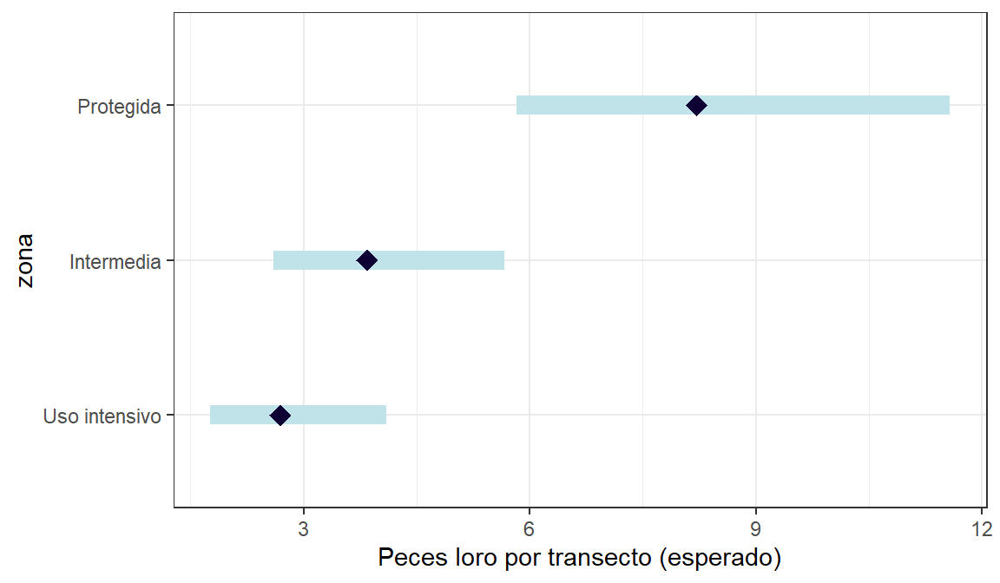
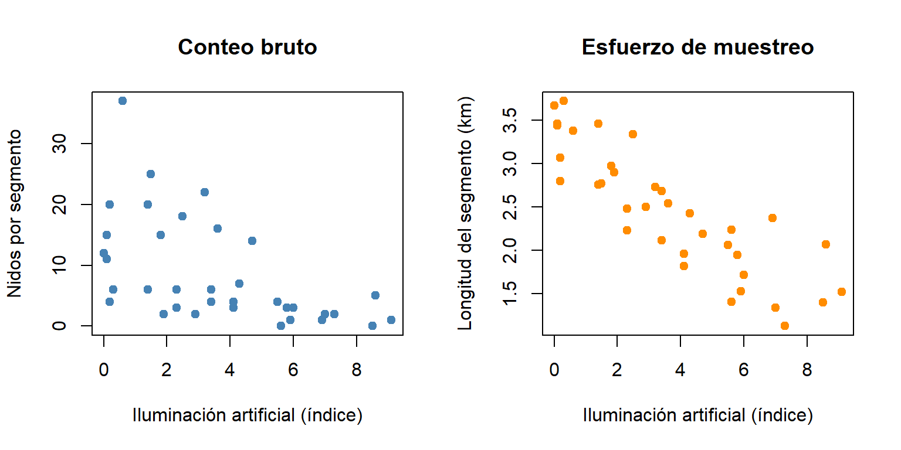

Material complementario · Taller 4
Cuando el GLM se complica · Bioestadística · Semana 2 · 2026-II
Cómo usar este material
Este documento amplía el Taller 4 · GLM binomial y Poisson. No es necesario recorrerlo completo: cada sección es independiente y responde a una situación que puede aparecer en el propio proyecto de grado.
| Situación en los datos | Sección |
|---|---|
| La respuesta es una proporción (vivos de un total, puntos con coral de un total) | 1. Proporciones |
| El intercepto no tiene sentido biológico | 2. Centrar el predictor |
Se quiere graficar la curva logística con su IC sin ggplot2 |
3. Intervalos en escala logit |
| Hay sobredispersión y se quiere entender cuasi-Poisson vs. binomial negativa | 4. Sobredispersión a fondo |
| Se comparan tres o más sitios y se quiere saber cuáles difieren entre sí | 5. Comparaciones por pares |
| Las unidades de muestreo difieren en área, tiempo o esfuerzo | 6. Offset y esfuerzo de muestreo |
| Se quiere un resumen rápido de cualquier GLM | 7. Función de verificación |
Código
# Librerías requeridas
library(tidyverse)
library(kableExtra)
library(emmeans) # Comparaciones por pares (sección 5)
# La binomial negativa se ajusta con MASS::glm.nb(), con el prefijo MASS::
# para no cargar el paquete, que enmascara dplyr::select()Código
# φ = suma de residuos de Pearson al cuadrado / g.l. residuales
phi <- function(modelo) {
sum(residuals(modelo, type = "pearson")^2) / modelo$df.residual
}1. Proporciones: éxitos de un total
Pregunta: ¿Disminuye con la salinidad intersticial la supervivencia de plántulas de mangle rojo (Rhizophora mangle) sembradas en parcelas de restauración?
En cada parcela se sembró un número distinto de plántulas (entre 8 y 30) y al final se contaron las vivas. La respuesta es una proporción, pero no conviene analizar el porcentaje suelto: 3 vivas de 4 no informa lo mismo que 30 de 40. Se modelan los éxitos y fracasos de cada parcela con cbind(), y así cada parcela pesa según su número de plántulas.
Código
# Reproducibilidad
set.seed(23)
# Número de parcelas
n <- 20
# Salinidad intersticial (ups)
salinidad <- round(runif(n, 20, 50), 1)
# Plántulas sembradas por parcela
sembradas <- sample(8:30, n, replace = TRUE)
# Plántulas vivas al final del ensayo
vivas <- rbinom(n, sembradas, plogis(4 - 0.1 * salinidad))
# Crear base de datos
mangle <- data.frame(parcela = paste0("P", 1:n), salinidad, sembradas, vivas,
muertas = sembradas - vivas)
# Tabla con los datos
head(mangle, 10) %>%
kbl(booktabs = TRUE, longtable = FALSE) %>%
kable_classic(full_width = F) %>%
kableExtra::row_spec(0, bold = TRUE)| parcela | salinidad | sembradas | vivas | muertas |
|---|---|---|---|---|
| P1 | 37.3 | 29 | 17 | 12 |
| P2 | 26.7 | 20 | 17 | 3 |
| P3 | 30.0 | 17 | 11 | 6 |
| P4 | 41.3 | 19 | 9 | 10 |
| P5 | 44.6 | 17 | 8 | 9 |
| P6 | 32.7 | 13 | 10 | 3 |
| P7 | 48.9 | 14 | 6 | 8 |
| P8 | 49.3 | 9 | 4 | 5 |
| P9 | 45.2 | 22 | 4 | 18 |
| P10 | 49.9 | 21 | 4 | 17 |
Código
# GLM binomial con éxitos y fracasos
mod_mangle <- glm(cbind(vivas, muertas) ~ salinidad, data = mangle, family = binomial)
# Consultar resultados
summary(mod_mangle)
Call:
glm(formula = cbind(vivas, muertas) ~ salinidad, family = binomial,
data = mangle)
Coefficients:
Estimate Std. Error z value Pr(>|z|)
(Intercept) 4.10614 0.64102 6.406 1.50e-10 ***
salinidad -0.10036 0.01589 -6.314 2.71e-10 ***
---
Signif. codes: 0 '***' 0.001 '**' 0.01 '*' 0.05 '.' 0.1 ' ' 1
(Dispersion parameter for binomial family taken to be 1)
Null deviance: 61.831 on 19 degrees of freedom
Residual deviance: 16.527 on 18 degrees of freedom
AIC: 83.203
Number of Fisher Scoring iterations: 4Código
# OR por cada 5 ups adicionales, con su IC 95 %
exp(5 * cbind(OR = coef(mod_mangle), confint(mod_mangle)))["salinidad", ] OR 2.5 % 97.5 %
0.6054339 0.5159912 0.7050033 Por cada 5 ups adicionales de salinidad, los odds de supervivencia se multiplican por 0.61. Expresar el OR por 5 unidades, y no por 1, es útil cuando una unidad del predictor es un cambio biológicamente pequeño.
Código
# Parámetro de dispersión
phi(mod_mangle)[1] 0.9070496
NotaSobredispersión en proporciones
A diferencia de los datos 0/1, las proporciones sí pueden tener sobredispersión: las plántulas de una misma parcela comparten sedimento, inundación y herbivoría, así que no se comportan como ensayos independientes. Aquí φ ≈ 0.91 y el modelo es adecuado. Si φ fuera claramente mayor que 1, la corrección más sencilla es family = quasibinomial, que mantiene los coeficientes y amplía los errores estándar.
2. Centrar el predictor
En el modelo de banda negra del taller, el OR del intercepto es prácticamente 0 porque corresponde a una temperatura de 0 °C, que no tiene sentido biológico. Centrar el predictor en un valor de referencia lo vuelve interpretable. Se recrean los datos del taller con la misma semilla:
Código
# Datos de la Parte 1 del taller
set.seed(365)
n <- 80
temperatura <- round(runif(n, 27, 31.5), 2)
enfermo <- rbinom(n, 1, plogis(-14.5 + 0.5 * temperatura))
coral_enf <- data.frame(colonia = paste0("C", 1:n), temperatura, enfermo)
mod_enf <- glm(enfermo ~ temperatura, data = coral_enf, family = binomial)
# Temperatura centrada en 29 °C
coral_enf$temp_c <- coral_enf$temperatura - 29
# Ajustar el modelo centrado
mod_enf_c <- glm(enfermo ~ temp_c, data = coral_enf, family = binomial)
# Comparar coeficientes
rbind(original = coef(mod_enf), centrado = coef(mod_enf_c)) (Intercept) temperatura
original -14.771427 0.5011961
centrado -0.236742 0.5011961Código
# Probabilidad predicha a 29 °C
plogis(coef(mod_enf_c)[1])(Intercept)
0.4410894 La pendiente no cambia; solo cambia el significado del intercepto, que ahora corresponde a una colonia a 29 °C: retransformado con plogis(), da una probabilidad de enfermedad de 44 %. Centrar es especialmente útil cuando el modelo incluye interacciones, porque los efectos principales pasan a describir el efecto en el valor de referencia.
3. Intervalos de confianza en escala logit
geom_smooth() dibuja la curva logística con su IC en una línea. Construirla a mano ayuda a entender lo que hace por dentro: el intervalo se calcula en la escala logit y luego se retransforma con plogis(), para que nunca salga de [0, 1]. Un intervalo simétrico calculado directamente en la escala de probabilidad sí podría hacerlo.
Código
# Secuencia de temperaturas
tt <- seq(27, 31.5, length = 100)
# Predicción en escala logit con su error estándar
pr <- predict(mod_enf, data.frame(temperatura = tt), se.fit = TRUE)
# Datos observados (0/1) con un leve desplazamiento vertical
plot(jitter(enfermo, 0.1) ~ temperatura, data = coral_enf,
pch = 16, col = "grey55", las = 1,
xlab = "Temperatura (°C)",
ylab = "Probabilidad de banda negra")
# Banda del IC 95 %, retransformada con plogis()
polygon(c(tt, rev(tt)),
plogis(c(pr$fit - 1.96 * pr$se.fit, rev(pr$fit + 1.96 * pr$se.fit))),
col = adjustcolor("steelblue", 0.25), border = NA)
# Curva ajustada
lines(tt, plogis(pr$fit), lwd = 3, col = "navy")
En un GLM Poisson se procede igual, pero se retransforma con exp() en lugar de plogis().
4. Sobredispersión a fondo: cuasi-Poisson y binomial negativa
En el taller se corrigió la sobredispersión con la binomial negativa. Esta sección compara las dos alternativas con un predictor continuo, el ejemplo original de las diapositivas.
Pregunta: ¿Aumenta la abundancia de peces por transecto con la complejidad estructural (rugosidad) del arrecife?
Código
# Reproducibilidad
set.seed(187)
# Número de transectos
n3 <- 40
# Complejidad estructural (rugosidad, 1–10)
complejidad_estructural <- round(runif(n3, 1, 10), 1)
# Conteos agregados (binomial negativa)
abundancia <- rnbinom(n3, mu = exp(1.0 + 0.18 * complejidad_estructural), size = 2)
# Crear base de datos
arrecife <- data.frame(transecto = paste0("T", 1:n3), complejidad_estructural, abundancia)
# Tabla con los datos
head(arrecife, 10) %>%
kbl(booktabs = TRUE, longtable = FALSE) %>%
kable_classic(full_width = F) %>%
kableExtra::row_spec(0, bold = TRUE)| transecto | complejidad_estructural | abundancia |
|---|---|---|
| T1 | 3.6 | 0 |
| T2 | 1.9 | 7 |
| T3 | 7.7 | 8 |
| T4 | 3.6 | 3 |
| T5 | 5.4 | 7 |
| T6 | 9.7 | 7 |
| T7 | 4.9 | 6 |
| T8 | 8.3 | 9 |
| T9 | 1.9 | 1 |
| T10 | 9.0 | 15 |
Ajustar el Poisson e inspeccionar φ
Código
# Ajustar GLM Poisson
mod_pois <- glm(abundancia ~ complejidad_estructural, data = arrecife, family = poisson)
# Consultar resultados
summary(mod_pois)
Call:
glm(formula = abundancia ~ complejidad_estructural, family = poisson,
data = arrecife)
Coefficients:
Estimate Std. Error z value Pr(>|z|)
(Intercept) 0.88980 0.16076 5.535 3.12e-08 ***
complejidad_estructural 0.18702 0.02378 7.865 3.70e-15 ***
---
Signif. codes: 0 '***' 0.001 '**' 0.01 '*' 0.05 '.' 0.1 ' ' 1
(Dispersion parameter for poisson family taken to be 1)
Null deviance: 151.068 on 39 degrees of freedom
Residual deviance: 86.764 on 38 degrees of freedom
AIC: 230.28
Number of Fisher Scoring iterations: 5Código
# Parámetro de dispersión
phi(mod_pois)[1] 2.216667φ ≈ 2.22, claramente mayor que 1: hay sobredispersión. Los errores estándar del Poisson están subestimados y sus valores p exageran la evidencia.
Nota¿Pearson o devianza?
Aquí φ se calcula con los residuos de Pearson (la opción estándar). La razón devianza residual / g.l. es una aproximación que suele dar valores parecidos (en este caso, 2.28).
Dos formas de corregir la sobredispersión
a. Cuasi-Poisson. Supone Var = φμ. Mantiene los mismos coeficientes β del Poisson y multiplica los errores estándar por √φ. Al no ser una distribución completa, no permite calcular AIC.
Código
# Ajustar cuasi-Poisson
mod_qp <- glm(abundancia ~ complejidad_estructural, data = arrecife, family = quasipoisson)
# Consultar resultados
summary(mod_qp)
Call:
glm(formula = abundancia ~ complejidad_estructural, family = quasipoisson,
data = arrecife)
Coefficients:
Estimate Std. Error t value Pr(>|t|)
(Intercept) 0.8898 0.2394 3.718 0.000646 ***
complejidad_estructural 0.1870 0.0354 5.282 5.48e-06 ***
---
Signif. codes: 0 '***' 0.001 '**' 0.01 '*' 0.05 '.' 0.1 ' ' 1
(Dispersion parameter for quasipoisson family taken to be 2.216667)
Null deviance: 151.068 on 39 degrees of freedom
Residual deviance: 86.764 on 38 degrees of freedom
AIC: NA
Number of Fisher Scoring iterations: 5b. Binomial negativa. Supone Var = μ + μ²/θ: añade el parámetro θ (a menor θ, mayor agregación). Es un modelo de verosimilitud completa y sí permite comparar con AIC.
Código
# Ajustar binomial negativa
mod_nb <- MASS::glm.nb(abundancia ~ complejidad_estructural, data = arrecife)
# Consultar resultados
summary(mod_nb)
Call:
MASS::glm.nb(formula = abundancia ~ complejidad_estructural,
data = arrecife, init.theta = 6.111377304, link = log)
Coefficients:
Estimate Std. Error z value Pr(>|z|)
(Intercept) 0.93119 0.21665 4.298 1.72e-05 ***
complejidad_estructural 0.17968 0.03513 5.115 3.14e-07 ***
---
Signif. codes: 0 '***' 0.001 '**' 0.01 '*' 0.05 '.' 0.1 ' ' 1
(Dispersion parameter for Negative Binomial(6.1114) family taken to be 1)
Null deviance: 72.538 on 39 degrees of freedom
Residual deviance: 44.024 on 38 degrees of freedom
AIC: 217.79
Number of Fisher Scoring iterations: 1
Theta: 6.11
Std. Err.: 2.79
2 x log-likelihood: -211.789 Código
# IC 95 % en escala exp()
exp(confint(mod_nb)) 2.5 % 97.5 %
(Intercept) 1.659897 3.844982
complejidad_estructural 1.119485 1.281541
Nota
θ estimado = 6.11, aunque los datos se simularon con θ = 2. Con 40 transectos, θ se estima con mucha incertidumbre (ver Std. Err. en la salida): es normal que difiera del valor generador.
Comparar los tres modelos
Código
# Extraer la fila del predictor de cada modelo
coef_de <- function(m) summary(m)$coefficients["complejidad_estructural", ]
# Tabla de comparación
data.frame(
modelo = c("Poisson", "Cuasi-Poisson", "Binomial negativa"),
beta = round(sapply(list(mod_pois, mod_qp, mod_nb), function(m) coef_de(m)[1]), 3),
EE = round(sapply(list(mod_pois, mod_qp, mod_nb), function(m) coef_de(m)[2]), 3),
p = format(signif(sapply(list(mod_pois, mod_qp, mod_nb), function(m) coef_de(m)[4]), 3)),
AIC = round(c(AIC(mod_pois), NA, AIC(mod_nb)), 2)
) %>%
kbl(booktabs = TRUE, longtable = FALSE) %>%
kable_classic(full_width = F) %>%
kableExtra::row_spec(0, bold = TRUE)| modelo | beta | EE | p | AIC |
|---|---|---|---|---|
| Poisson | 0.187 | 0.024 | 3.70e-15 | 230.28 |
| Cuasi-Poisson | 0.187 | 0.035 | 5.48e-06 | NA |
| Binomial negativa | 0.180 | 0.035 | 3.14e-07 | 217.79 |
El coeficiente apenas cambia (0.187 → 0.180), pero el error estándar crece de 0.024 a 0.035 y el AIC mejora de 230.3 a 217.8. La binomial negativa es el modelo más honesto para estos datos con agregación biológica. El cuasi-Poisson no aparece en la comparación por AIC porque no tiene verosimilitud completa, aunque sigue siendo válido cuando solo interesa corregir errores estándar y valores p.
TipCómo reportar el resultado
La abundancia de peces aumentó con la complejidad estructural del arrecife (GLM binomial negativa, enlace log; razón de tasas = 1,20 por unidad de rugosidad; IC 95 %: 1,12–1,28; p < 0,001; θ = 6,1). Se descartó el modelo Poisson por sobredispersión (φ = 2,22; ΔAIC = 12,5).
5. Comparaciones por pares entre sitios
En la Parte 3 del taller, cada razón de tasas compara una zona con la de referencia (uso intensivo). Para saber qué zonas difieren entre sí, incluida la intermedia frente a la protegida, se hacen comparaciones por pares con el paquete emmeans, que también ajusta los valores p por comparaciones múltiples (Tukey, como en el ANOVA del Taller 2). Se recrean los datos del taller con la misma semilla:
Código
# Datos de la Parte 3 del taller
set.seed(147)
zona <- factor(rep(c("Uso intensivo", "Intermedia", "Protegida"), each = 16),
levels = c("Uso intensivo", "Intermedia", "Protegida"))
epoca <- factor(rep(rep(c("Seca", "Lluviosa"), each = 8), times = 3),
levels = c("Seca", "Lluviosa"))
mu <- exp(1.3 + c(0, 0.45, 0.95)[as.integer(zona)] - 0.35 * (epoca == "Lluviosa"))
abundancia <- rnbinom(48, mu = mu, size = 2.5)
loro <- data.frame(transecto = paste0("T", 1:48), zona, epoca, abundancia)
# Modelo aditivo del taller
mod_loro <- MASS::glm.nb(abundancia ~ zona + epoca, data = loro)
# Abundancias esperadas por zona y comparaciones por pares (Tukey)
comp <- emmeans(mod_loro, pairwise ~ zona, type = "response")
comp$emmeans
zona response SE df asymp.LCL asymp.UCL
Uso intensivo 2.69 0.579 Inf 1.76 4.10
Intermedia 3.84 0.762 Inf 2.60 5.67
Protegida 8.21 1.440 Inf 5.83 11.57
Results are averaged over the levels of: epoca
Confidence level used: 0.95
Intervals are back-transformed from the log scale
$contrasts
contrast ratio SE df null z.ratio p.value
Uso intensivo / Intermedia 0.700 0.2050 Inf 1 -1.220 0.4412
Uso intensivo / Protegida 0.328 0.0907 Inf 1 -4.028 0.0002
Intermedia / Protegida 0.468 0.1240 Inf 1 -2.874 0.0113
Results are averaged over the levels of: epoca
P value adjustment: tukey method for comparing a family of 3 estimates
Tests are performed on the log scale La primera tabla da la abundancia esperada por transecto en cada zona (promediada entre épocas) con su IC 95 %, ya en la escala de conteos. La segunda da la razón entre cada par de zonas: un valor menor que 1 indica que la primera zona del par tiene menos peces. Con el ajuste de Tukey, la zona protegida difiere de las otras dos, mientras que la intermedia y la de uso intensivo no difieren con claridad.
Código
# Abundancia esperada por zona con su IC 95 %
plot(comp$emmeans, xlab = "Peces loro por transecto (esperado)") +
theme_bw()
Nota¿Y si la interacción hubiera sido significativa?
Entonces la diferencia entre zonas cambiaría según la época, y las comparaciones se harían dentro de cada época: emmeans(mod_loro_nb, pairwise ~ zona | epoca, type = "response"), con el modelo que incluye la interacción (mod_loro_nb en el taller).
6. Offset y esfuerzo de muestreo desigual
Si las unidades de muestreo difieren en área, tiempo o esfuerzo (parches de distinto tamaño, transectos de distinta longitud, nasas caladas distinto número de horas), una unidad grande acumula más individuos solo por su tamaño. Lo que interesa entonces es la tasa (individuos por m², por km o por hora), y se modela incluyendo el logaritmo del esfuerzo como offset:
glm(conteo ~ predictor + offset(log(esfuerzo)), family = poisson, data = datos)
El offset es un término del predictor lineal con coeficiente fijo en 1: no se estima, solo convierte el conteo esperado en una tasa. Su inclusión la decide el diseño y la pregunta, no el ajuste: si el esfuerzo varía entre unidades y la pregunta es sobre la tasa, el offset va en el modelo.
Estudio de caso: nidos de tortuga caguama e iluminación artificial
A continuación se presentan el contexto y los datos; la decisión se toma con los criterios de la lista de verificación del taller y del árbol de decisión de las diapositivas.
NotaEl contexto
Un programa de monitoreo de tortuga caguama (Caretta caretta) en playas del Caribe del Magdalena registró el número de nidos en una temporada en 36 segmentos de playa. Los segmentos se delimitaron entre puntos de acceso, así que su longitud varía (de menos de 1 km a más de 3 km). En cada segmento se midió la iluminación artificial nocturna (índice 0–10), porque la luz desorienta a las hembras que buscan dónde anidar. Los segmentos más iluminados, cercanos a poblaciones, tienden a ser los más cortos.
Antes de escribir código, conviene responder:
- ¿Qué tipo de variable respuesta es el número de nidos? Con eso, ¿qué familia y qué enlace corresponden?
- ¿El esfuerzo de muestreo es igual en todos los segmentos? Si no lo es, ¿cómo se incorpora en el modelo?
- Después de ajustar, ¿qué se debe revisar antes de interpretar el efecto de la iluminación?
A continuación se simulan los datos y se ajusta, primero, el modelo más ingenuo:
Código
# Reproducibilidad
set.seed(2026)
# Número de segmentos de playa
n4 <- 36
# Iluminación artificial nocturna (índice 0–10)
iluminacion <- round(runif(n4, 0, 10), 1)
# Longitud de cada segmento (km): los más iluminados son más cortos
longitud_km <- round(pmax(0.4, 3.2 - 0.22 * iluminacion + rnorm(n4, 0, 0.4)), 2)
# Nidos por segmento: tasa por km × longitud, con agregación
nidos <- rnbinom(n4, mu = longitud_km * exp(1.6 - 0.15 * iluminacion), size = 3)
# Crear base de datos
tortuga <- data.frame(segmento = paste0("S", 1:n4), iluminacion, longitud_km, nidos)
# Tabla con los datos
head(tortuga, 10) %>%
kbl(booktabs = TRUE, longtable = FALSE) %>%
kable_classic(full_width = F) %>%
kableExtra::row_spec(0, bold = TRUE)| segmento | iluminacion | longitud_km | nidos |
|---|---|---|---|
| S1 | 7.0 | 1.34 | 2 |
| S2 | 5.6 | 2.24 | 0 |
| S3 | 1.4 | 2.76 | 6 |
| S4 | 2.9 | 2.50 | 2 |
| S5 | 5.6 | 1.41 | 0 |
| S6 | 0.3 | 3.72 | 6 |
| S7 | 4.7 | 2.19 | 14 |
| S8 | 8.6 | 2.07 | 5 |
| S9 | 2.5 | 3.34 | 18 |
| S10 | 5.8 | 1.95 | 3 |
Código
# Dividir ventana gráfica
par(mfrow = c(1, 2))
# Nidos por segmento vs. iluminación
plot(nidos ~ iluminacion, data = tortuga,
pch = 19, col = "steelblue",
xlab = "Iluminación artificial (índice)", ylab = "Nidos por segmento",
main = "Conteo bruto")
# Longitud del segmento vs. iluminación
plot(longitud_km ~ iluminacion, data = tortuga,
pch = 19, col = "darkorange",
xlab = "Iluminación artificial (índice)", ylab = "Longitud del segmento (km)",
main = "Esfuerzo de muestreo")
Código
# Restaurar ventana
par(mfrow = c(1, 1))Código
# Modelo ingenuo: Poisson sin considerar la longitud del segmento
mod_ingenuo <- glm(nidos ~ iluminacion, data = tortuga, family = poisson)
# Razón de tasas e IC 95 %
exp(cbind(RT = coef(mod_ingenuo), confint(mod_ingenuo))) RT 2.5 % 97.5 %
(Intercept) 17.5308429 14.8783832 20.5261860
iluminacion 0.7707131 0.7300207 0.8119668Código
# Parámetro de dispersión
phi(mod_ingenuo)[1] 5.349368Con los dos gráficos y esta salida en mano, se debe tomar una decisión antes de seguir leyendo: ¿se reporta el modelo ingenuo? Si no, ¿qué dos cambios requiere?
TipVerificación del razonamiento (clic para revelar)
1. Tipo de respuesta: es un conteo (0, 1, 2, …): familia Poisson con enlace log como punto de partida.
2. Esfuerzo: los segmentos miden distinto, así que un segmento largo acumula más nidos solo por su tamaño. Lo que interesa es la tasa de nidos por km, y se modela con offset(log(longitud_km)). El segundo gráfico muestra además que la longitud está muy correlacionada con la iluminación (r = -0.86): omitir el offset mezcla el efecto de la luz con el de la longitud.
3. Lo que hay que revisar: φ. Con φ = 5.35 en el modelo ingenuo, la sobredispersión es evidente, algo típico de nidos agregados en tramos favorables de playa.
Se ajusta el Poisson con offset y se revisa de nuevo φ:
Código
# Poisson con offset: modela nidos por km
mod_offset <- glm(nidos ~ iluminacion + offset(log(longitud_km)),
data = tortuga, family = poisson)
# Parámetro de dispersión
phi(mod_offset)[1] 4.656573El offset corrige el esfuerzo, pero la sobredispersión persiste (φ = 4.66). Se ajusta la binomial negativa con el mismo offset:
Código
# Binomial negativa con offset
mod_tortuga <- MASS::glm.nb(nidos ~ iluminacion + offset(log(longitud_km)),
data = tortuga)
# Consultar resultados
summary(mod_tortuga)
Call:
MASS::glm.nb(formula = nidos ~ iluminacion + offset(log(longitud_km)),
data = tortuga, init.theta = 2.360427351, link = log)
Coefficients:
Estimate Std. Error z value Pr(>|z|)
(Intercept) 1.69790 0.20808 8.16 3.36e-16 ***
iluminacion -0.19027 0.05256 -3.62 0.000295 ***
---
Signif. codes: 0 '***' 0.001 '**' 0.01 '*' 0.05 '.' 0.1 ' ' 1
(Dispersion parameter for Negative Binomial(2.3604) family taken to be 1)
Null deviance: 51.225 on 35 degrees of freedom
Residual deviance: 38.603 on 34 degrees of freedom
AIC: 210.36
Number of Fisher Scoring iterations: 1
Theta: 2.360
Std. Err.: 0.766
2 x log-likelihood: -204.357 Código
# Razón de tasas e IC 95 %
exp(cbind(RT = coef(mod_tortuga), confint(mod_tortuga))) RT 2.5 % 97.5 %
(Intercept) 5.4624391 3.6396352 8.4547008
iluminacion 0.8267387 0.7412182 0.9187815Para observar la comparación completa, así se ven los tres modelos lado a lado:
Código
# Tabla de comparación
data.frame(
modelo = c("Poisson sin offset", "Poisson con offset", "Binomial negativa con offset"),
RT_iluminacion = round(exp(c(coef(mod_ingenuo)[2], coef(mod_offset)[2], coef(mod_tortuga)[2])), 3),
phi = round(c(phi(mod_ingenuo), phi(mod_offset), phi(mod_tortuga)), 2),
AIC = round(c(AIC(mod_ingenuo), AIC(mod_offset), AIC(mod_tortuga)), 1)
) %>%
kbl(booktabs = TRUE, longtable = FALSE) %>%
kable_classic(full_width = F) %>%
kableExtra::row_spec(0, bold = TRUE)| modelo | RT_iluminacion | phi | AIC |
|---|---|---|---|
| Poisson sin offset | 0.771 | 5.35 | 298.3 |
| Poisson con offset | 0.854 | 4.66 | 279.5 |
| Binomial negativa con offset | 0.827 | 1.03 | 210.4 |
Conviene separar las dos decisiones. El offset no se incluyó porque mejore el AIC, sino porque el diseño lo exige: la pregunta es sobre nidos por km y los segmentos miden distinto. Se habría incluido aunque el AIC no cambiara. La binomial negativa, en cambio, sí se elige con criterios estadísticos: φ ≈ 1.03 confirma que la sobredispersión quedó resuelta. Los tres AIC son comparables, porque la respuesta es la misma (el conteo de nidos) y el offset solo fija un término del predictor lineal; aquí sirven como información complementaria (298.3 → 279.5 → 210.4). Lo que más cambia es la razón de tasas:
- Sin offset, cada unidad de iluminación “reduce” los nidos un 23 %, pero parte de esa reducción se debe a que los segmentos iluminados son más cortos.
- Con offset y binomial negativa, la densidad de nidos por km se reduce un 17 % por unidad de iluminación (IC 95 % de la razón de tasas: 0.74–0.92).
La conclusión biológica se mantiene (la iluminación reduce la anidación), pero el tamaño del efecto que se reporta depende de dos decisiones del diseño y del análisis: considerar el esfuerzo y la agregación. El modelo que se reporta es mod_tortuga.
7. Función de verificación
Una función corta que resume, para cualquier GLM, la familia, los coeficientes en escala exp() y, en los modelos Poisson, el parámetro de dispersión:
Código
# Función de verificación
checklist_glm <- function(modelo) {
fam <- family(modelo)$family
cat("Familia:", fam, "\n")
cat("Coeficientes en escala exp():\n")
print(round(exp(coef(modelo)), 3))
if (fam == "poisson") {
f <- phi(modelo)
cat("phi:", round(f, 2),
ifelse(f > 1.2, "-> claramente mayor que 1: revisar sobredispersion",
"-> cercano a 1"), "\n")
}
cat("AIC:", round(AIC(modelo), 2), "\n\n")
}
# Aplicar a modelos de este material
checklist_glm(mod_enf)Familia: binomial
Coeficientes en escala exp():
(Intercept) temperatura
0.000 1.651
AIC: 105.76 Código
checklist_glm(mod_pois)Familia: poisson
Coeficientes en escala exp():
(Intercept) complejidad_estructural
2.435 1.206
phi: 2.22 -> claramente mayor que 1: revisar sobredispersion
AIC: 230.28 Código
checklist_glm(mod_ingenuo)Familia: poisson
Coeficientes en escala exp():
(Intercept) iluminacion
17.531 0.771
phi: 5.35 -> claramente mayor que 1: revisar sobredispersion
AIC: 298.25 El umbral de 1,2 dentro de la función es solo una regla práctica para llamar la atención; la decisión final depende de cuánto cambian los errores estándar y las conclusiones al corregir.
Referencias
Quinn, G. P., & Keough, M. J. (2024). Experimental Design and Data Analysis for Biologists (2nd ed.). Cambridge University Press. enlace_ejercicios
Logan, M. (2011). Biostatistical Design and Analysis Using R. Wiley-Blackwell. enlace_ejercicios; enlace_libro
Calvo Sendín, J. F. (2025). Análisis estadístico de datos biológicos en R. Universidad de Murcia. — Referencia técnica para GLM binomial/Poisson y sobredispersión. enlace
Nota
Los ejemplos y bases de datos de este material son de elaboración propia para este curso; no reproducen los ejercicios ni el código de las fuentes citadas.